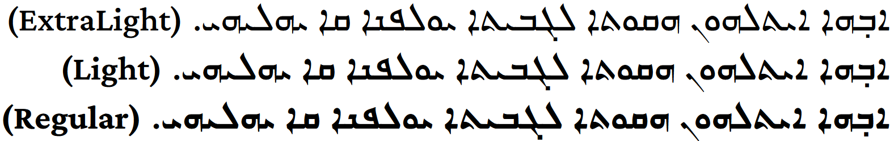
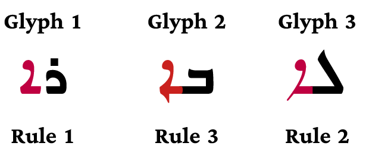
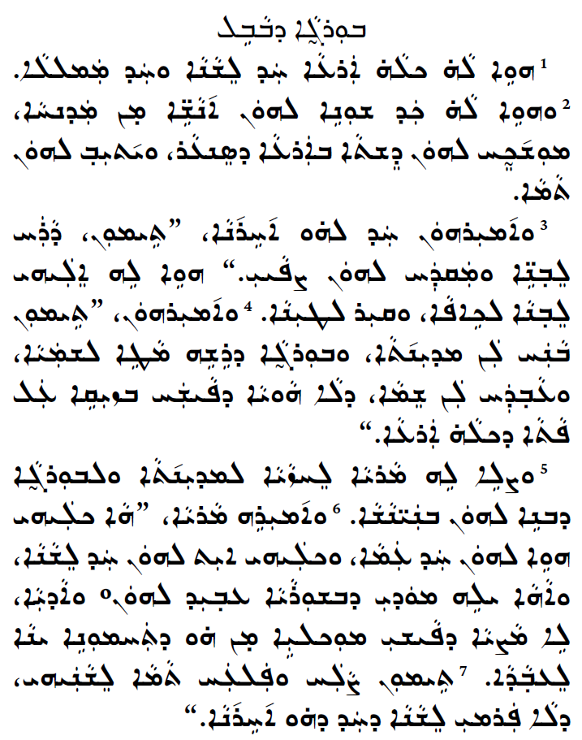

The Idiqlat font supports the East Syriac style of the Syriac script. The font has support for glyph alternates, ligatures, and diacritics that the East Syriac style requires. The design of the font is a resized and modernized revival of metal type cut in India from around 1920.
The font name, Idiqlat, means “Tigris River” in ancient Akkadian/Assyrian. The emphasis is on the first syllable: EE-dee-klat.
The East Syriac style is used primarily by the Assyrians (Church of the East) and Chaldeans. It is also used by the Syrian Orthodox in headings of texts.
To contribute, see github.com/silnrsi/font-idiqlat.
  